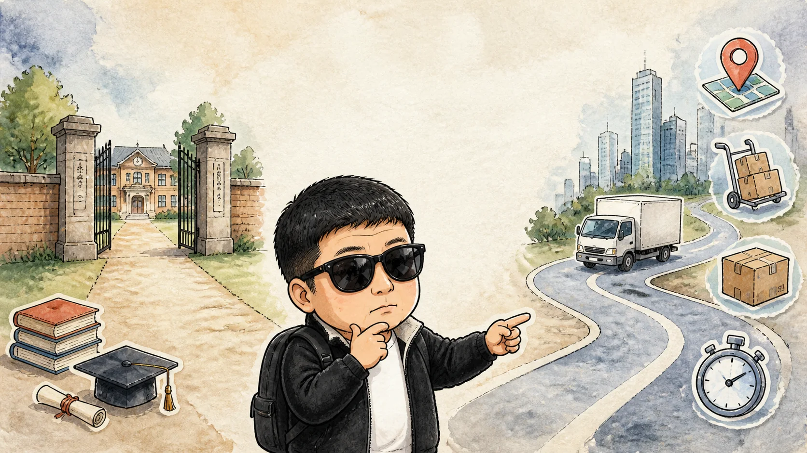
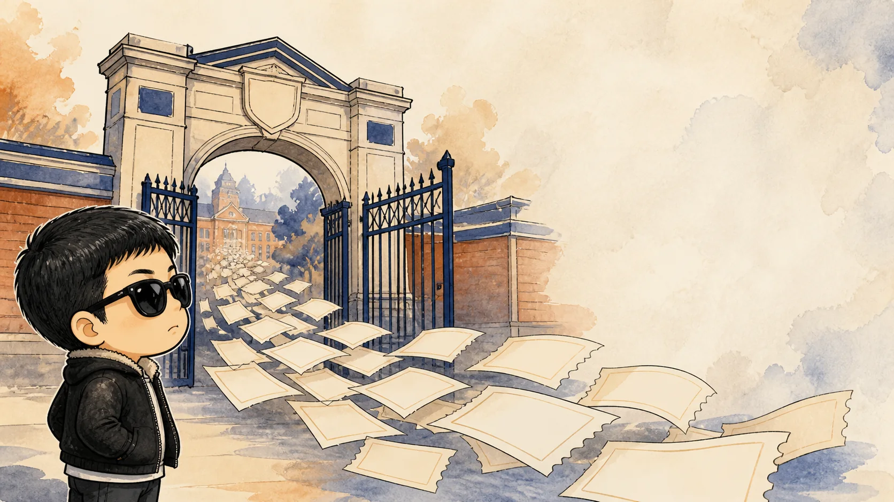
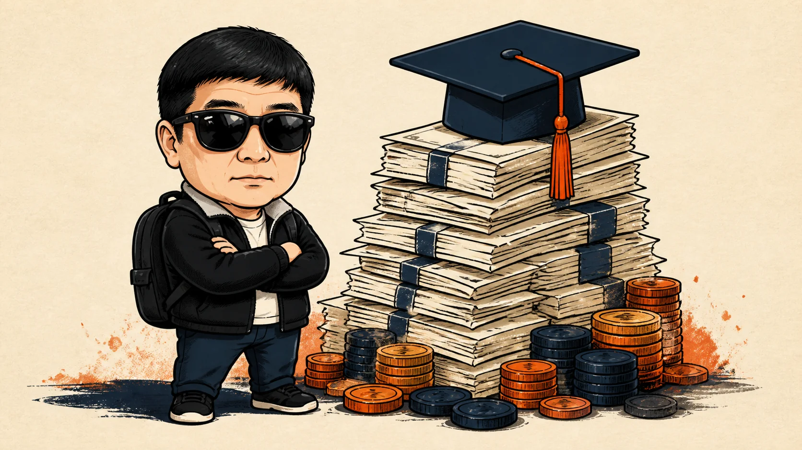
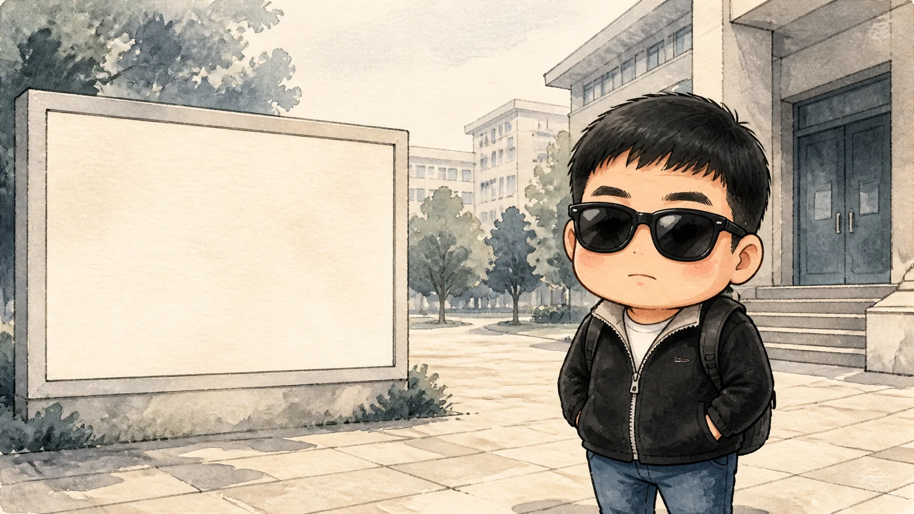
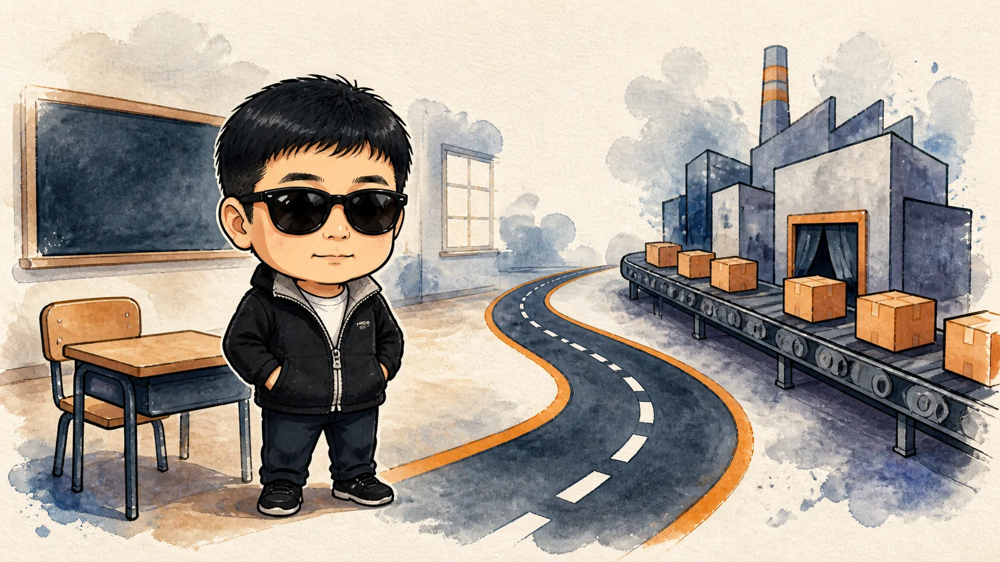
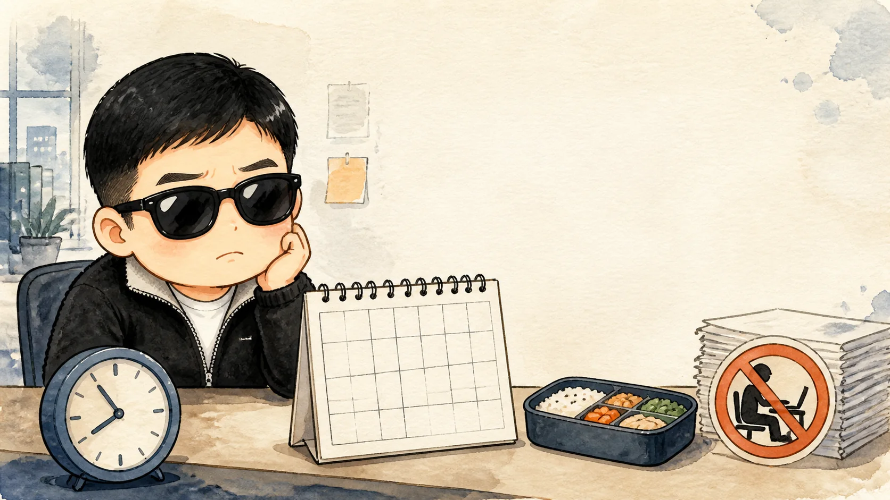
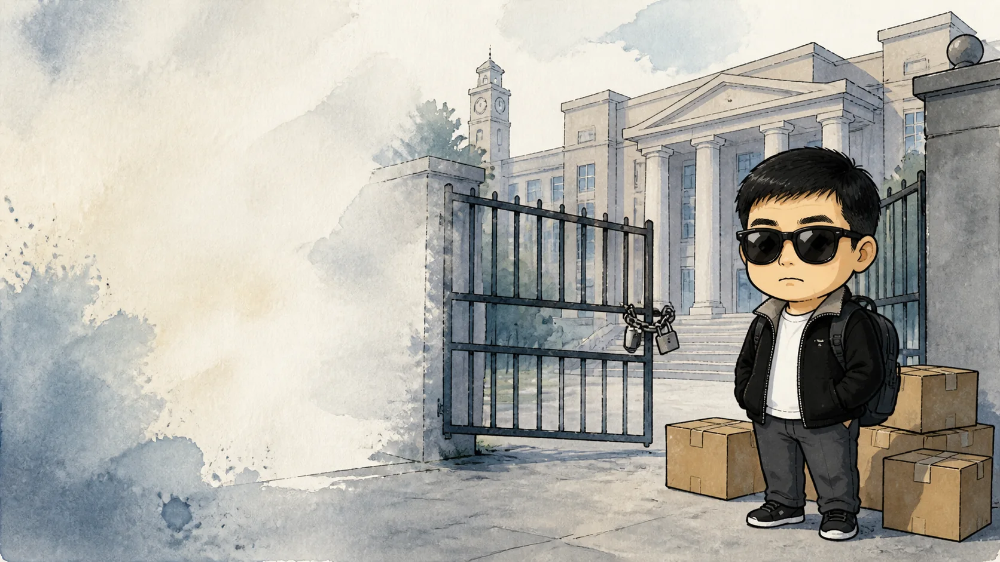
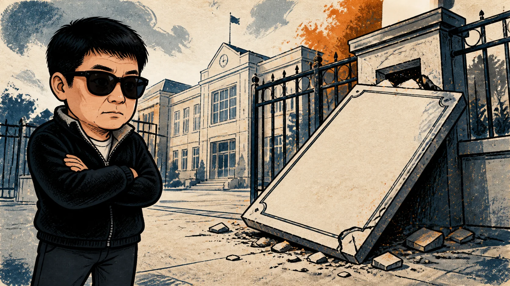
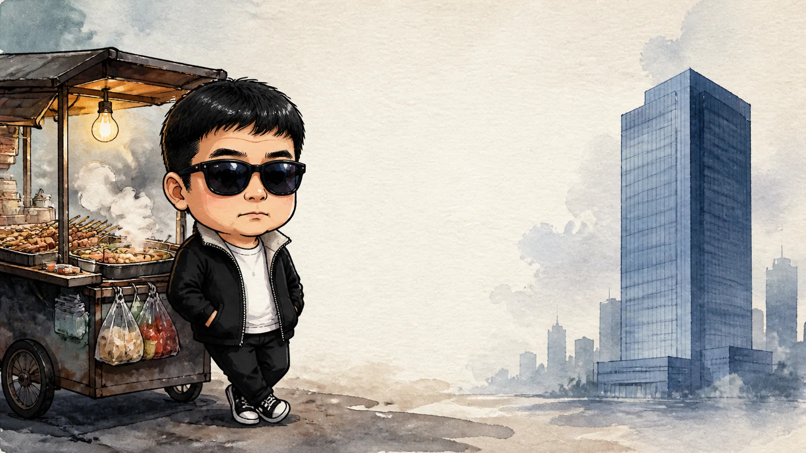

時代的背叛
台灣高教內卷的十大真相
手繪插畫動畫｜Q 版墨鏡配角｜全文同步閱讀
封面
前言：消失的「門票」，失落的一代
站在台北市大安區的十字路口，如果你仔細觀察那些在紅燈前焦急等待、穿著外送平台制服的騎士們，你可能會驚訝地發現，在每五台呼嘯而過的機車中，或許就有一位擁有博士頭銜的駕駛。這不是什麼勵志的「斜槓人生」故事，而是台灣高等教育現狀中最殘酷、最顯眼的縮影。
第 1 頁／共 29 頁｜文字與配音同步
前言：消失的「門票」，失落的一代
如果你去問一個 40 歲的台灣人，他這輩子對父母最大的期望是什麼，九成的人會回答：「考上好大學」。在那個年代，大學文憑是階級晉升的「鐵門票」，代表著你從此告別了工地的體力勞動與工廠的流水線，換取了一份象徵體面與穩定的「鐵飯碗」。
第 2 頁／共 29 頁｜文字與配音同步
前言：消失的「門票」，失落的一代
然而，當你轉向今天 20 出頭的年輕人，詢問大學教會了他們什麼時，得到的答案往往是一句面無表情的自嘲：「學會了接受自己是個廢物」。我們正處於台灣教育史上最「魔幻」的時代：滿街都是大學生，滿地都是碩士，連便利商店幫你加熱便當的店員，都可能是中文系的碩士生。
第 3 頁／共 29 頁｜文字與配音同步
前言：消失的「門票」，失落的一代
學歷，這張曾經通往未來的船票，如今為何變成了綁在年輕人腳上沉重的鐵球？作為一名長期觀察社會結構的評論者，我將透過這篇深度調查報告，為你扒開台灣教育圈最病態、最荒誕的十個內卷真相。
第 4 頁／共 29 頁｜文字與配音同步

真相十：學歷大通膨，7 分也能上大學的荒謬劇
台灣高等教育崩壞的第一個徵兆，始於「門檻」的消失。2008 年，台灣大學錄取分數曾創下 7.69 分的歷史新低。這意味著考生甚至不需要看題目，隨機塗抹答案卷，都能理直氣壯地踏進大學校門，並在四年後拿回一張印有學士學位的證書。
第 5 頁／共 29 頁｜文字與配音同步
真相十：學歷大通膨，7 分也能上大學的荒謬劇
回溯 30 年前，台灣大學錄取率低於 20%，考上大學是光宗耀祖、鄰里放炮慶祝的榮耀。但根據教育部數據，2023 年的大專院校錄取率已高達 97%，且連續多年維持在此水平。這已不再是「考」大學，而是「登記入學」；只要不交白卷、不睡過頭，人人都有大學念。
第 6 頁／共 29 頁｜文字與配音同步

真相十：學歷大通膨，7 分也能上大學的荒謬劇
當文憑從沉甸甸的金磚變成比超市傳單還廉價的紙張，它的價值便在氾濫中徹底崩塌。
第 7 頁／共 29 頁｜文字與配音同步
真相九：60 萬起步的「學貸賣身契」
雖然文憑貶值，但讀書的代價卻逐年攀升。就讀私立大學一學期的學雜費約 5 至 6 萬台幣，四年的純學費支出便高達 40 到 50 萬，若加計生活費與課本費，至少需耗費 60 到 80 萬台幣。
第 8 頁／共 29 頁｜文字與配音同步

真相九：60 萬起步的「學貸賣身契」
以 2024 年台灣基本工資月薪 27,470 元計算，一名社會新鮮人需不吃不喝整整兩年才湊得齊這筆錢。目前台灣有超過 80 萬名年輕人一出校門就背負著沉重的就學貸款。
第 9 頁／共 29 頁｜文字與配音同步
真相九：60 萬起步的「學貸賣身契」
諷刺的是，當他們拿著這張價值 60 萬的「職場入場券」來到社會門口時，卻發現所有人手裡都拿著同樣的票，而雇主卻冷冷地說：「我們現在只需要能搬貨的人」。
第 10 頁／共 29 頁｜文字與配音同步

真相八：「腳到、錢到、畢業到」的私校學店產業鏈
在少子化的巨浪下，大學數量卻仍維持在 150 多所，這導致校方為了生存，將核心業務從「教學」轉向「招商」。所謂的「學店」，其運作模式與美容院辦會員卡無異：只要你按時交學費，學校便負責讓你畢業。
第 11 頁／共 29 頁｜文字與配音同步
真相八：「腳到、錢到、畢業到」的私校學店產業鏈
這些學校的教學品質堪憂，有的教授沿用 20 年前的講義，有的考試則直接發放考古題背答案。更荒誕的是，部分學校甚至與東南亞仲介合作，以「高品質教育」為誘餌，將外籍學生騙來台灣，卻讓他們在破爛的校園與語言不通的課堂中自生自滅。這不是教育，而是以少子化危機為藉口的制度化詐欺。
第 12 頁／共 29 頁｜文字與配音同步
真相七：文組碩士的「薪資判決書」
台灣的產業結構極度傾斜，80% 以上的高薪職位集中在半導體、資工、電機等理工領域。這導致文史哲學科的碩博士生，在就業市場上的價值甚至不如一張悠遊卡。
第 13 頁／共 29 頁｜文字與配音同步
真相七：文組碩士的「薪資判決書」
一名中文系或歷史所碩士，投資了六年時間與數十萬學費，畢業後的起薪往往僅有 26k 到 27k，與高中畢業直接打工的同儕無異。在便利商店穿著橘色制服刷條碼的台大中文碩士，面對社會的苦笑背後，藏著最殘忍的判決：這個社會並不需要你的博學，甚至會因為你「讀太多書」而限制你的發展空間。
第 14 頁／共 29 頁｜文字與配音同步

真相六：無薪實習------倒貼錢買「現代學徒制」
在台北的職場中，有一種被美化為「累積經驗」的剝削形式：無薪實習。實習生每天九點打卡、八點下班，處理雜務與跑腿，三個月後換來的僅是一張實習證明，而非薪水。
第 15 頁／共 29 頁｜文字與配音同步

真相六：無薪實習------倒貼錢買「現代學徒制」
更離譜的是，許多公司連交通與伙食補貼都不提供，學生每個月需倒貼三、四千元來「資助」年營收上億的企業培育人才。企業主的邏輯荒謬至極：「我給你經歷，這就是你的報酬」。在這種扭曲的評估體系下，年輕人的熱情淪為免費的勞動力，成為內卷循環中的廉價燃料。
第 16 頁／共 29 頁｜文字與配音同步
真相五：學歷雪崩------博士報考清潔隊員
2023 年台北市環保局召考清潔隊員，錄取率不到 8%，其中竟然出現了博士學歷的報考者。一名寒窗苦讀十載、產出十幾萬字論文的博士，其最終的職業選擇竟是追求月薪 4 萬元的穩定清潔工作。
第 17 頁／共 29 頁｜文字與配音同步
真相五：學歷雪崩------博士報考清潔隊員
這反映出台灣大專院校職缺的極度飽和，一個冷門系所的講師雀額，往往有兩三百個博士在搶。搶不到的人，只能在實驗室擔任高薪雜工（博士後研究），年過 35 仍無存款、無保險、不敢結婚，看著當年沒念大學的技職同學買房買車。這不是黑色幽默，而是台灣學術象牙塔崩塌的真實餘震。
第 18 頁／共 29 頁｜文字與配音同步

真相四：職場荒誕劇------「隱藏碩士學歷」
在今天的台灣求職市場，學歷不再是金牌敲門磚，有時反而是砸腳的石頭。許多投遞月薪三萬元職缺的碩士生，會被建議「隱藏學歷」。
第 19 頁／共 29 頁｜文字與配音同步

真相四：職場荒誕劇------「隱藏碩士學歷」
原因在於雇主的心理：「這人學歷太高，一定請不起、留不住、不好管」。雇主寧可錄取乖巧、領最低工資的高職生，也不願錄取會用學術理論挑戰管理方式的碩士。這種「高不成、低不就」的尷尬，讓無數高學歷青年在職場的入口處徘徊，進退維谷。
第 20 頁／共 29 頁｜文字與配音同步
真相三：大學退場，成千上萬的「學術孤兒」
如果說學歷貶值是個人的悲劇，那大學退場就是體系的全面潰敗。隨著少子化加速，2023 年首府大學等多所學校相繼倒閉，學生被迫成為「學術孤兒」，面臨學分不被承認、人生成本付諸流水的困境。
第 21 頁／共 29 頁｜文字與配音同步

真相三：大學退場，成千上萬的「學術孤兒」
預計未來 10 年，台灣還會有至少 20 所大學面臨停辦。這是一場經濟與教育的雙重災難。當校長與決策者還在船艙討論救生圈的材質時，載著無數青年青春的船隻早已在無聲中沉沒。
第 22 頁／共 29 頁｜文字與配音同步
真相二：夜市攤位------高學歷者的「尊嚴墳墓」
在士林、逢甲等夜市，越來越多口齒清晰、談吐文雅的年輕老闆，其實是外文所、資工所或餐飲管理碩士。他們選擇在 40 度的油鍋前炸雞排，不是因為愛好，而是因為現實：寫字樓 3 萬元的薪水養不活自己，但夜市擺攤一個月能淨賺 7 到 10 萬。
第 23 頁／共 29 頁｜文字與配音同步
真相二：夜市攤位------高學歷者的「尊嚴墳墓」
這不是「行行出狀元」的勵志故事，而是社會薪資結構崩壞後的被迫選擇。這些高學歷者必須放下知識分子的最後一絲尊嚴，才能在這個城市活下去。那一套讀了 18 年書才換來的西裝，終究撐不起在台北生存的成本。
第 24 頁／共 29 頁｜文字與配音同步
真相一：博士送外賣------內卷的最底層鏡頭
這是台灣高教內卷最可怕的終點：外送員中擁有碩博士學位的人數，在五年內暴漲了將近四倍。
第 25 頁／共 29 頁｜文字與配音同步
真相一：博士送外賣------內卷的最底層鏡頭
一名投入 200 萬台幣、耗費 10 年光陰拿到的博士學位，在現實市場中卻換不到一個月薪 3 萬 5 以上的穩定職缺。最終，那些關於後現代主義、解構理論的高深學問，被厚厚的灰塵覆蓋在租屋處的角落，而主人正騎著破舊機車，為了每單 40 元的獎勵在巷弄間穿梭。
第 26 頁／共 29 頁｜文字與配音同步
結語：這是一場制度化的「龐氏騙局」嗎？
台灣的大學文憑，正逐漸演變成一種「鑽石效應」：它本非必需品，卻被整個社會透過 30 年的洗腦，塑造成階級晉升的虛假門票，引誘一代又一代的年輕人砸下重金換取一張越來越不值錢的入場券。
第 27 頁／共 29 頁｜文字與配音同步
結語：這是一場制度化的「龐氏騙局」嗎？
如果你也是那個背負學貸、在城市裡找不到位置的高學歷青年，請記住：錯的不是你，而是規則壞了。你不必為送外賣或打工感到羞恥，真正該感到羞恥的，是那個許下「好好讀書就能出人頭地」諾言，卻在事後毀約並假裝若無其事的時代。
第 28 頁／共 29 頁｜文字與配音同步
結語：這是一場制度化的「龐氏騙局」嗎？
這場內卷競賽還在繼續，但或許我們該停下來問問：我們還要讓多少青春，陪葬在這個扭曲的評估體系裡？
第 29 頁／共 29 頁｜文字與配音同步